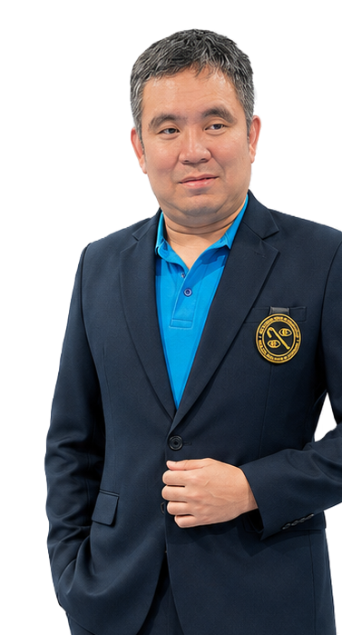
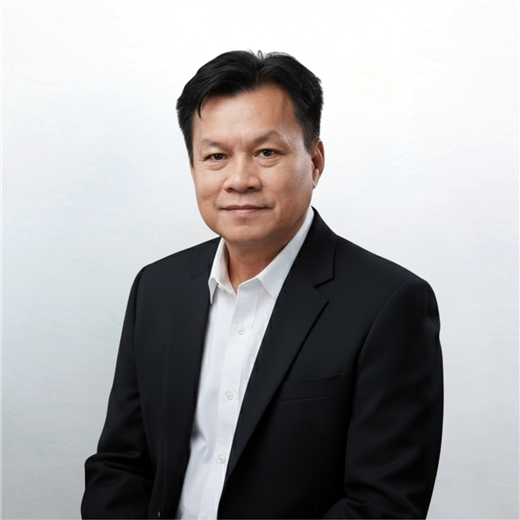
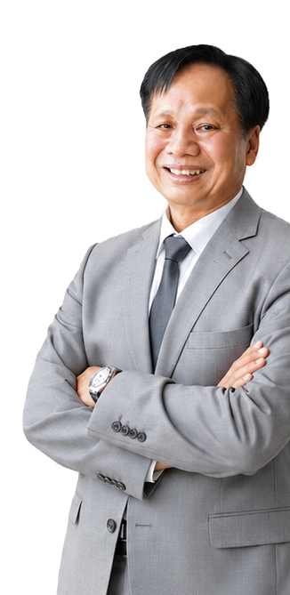
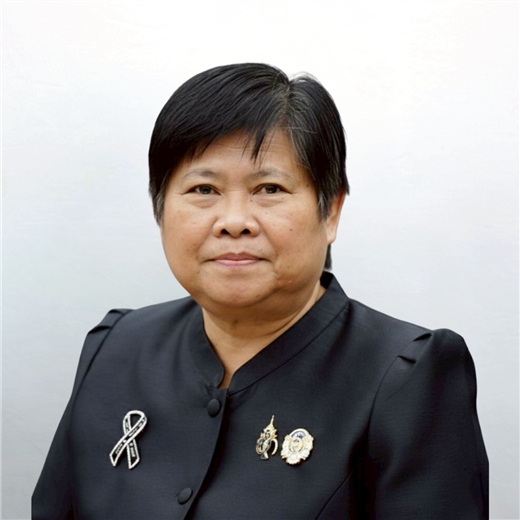
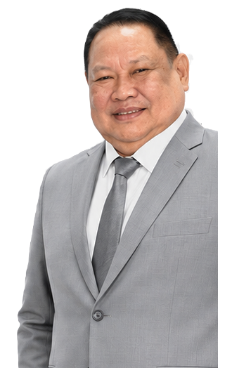
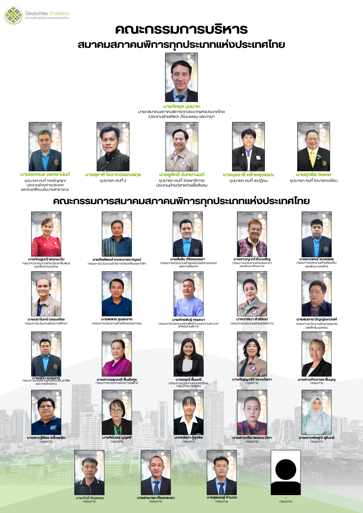

ความเป็นมา
สภาคนพิการทุกประเภทแห่งประเทศไทย กำเนิดขึ้นหลังปีคนพิการสากล เมื่อวันที่ 20 ตุลาคม 2526 โดยแกนนำคนพิการหลายท่านในขณะนั้น ซึ่งได้รับแรงบันดาลใจจากการเข้าร่วมประชุมสมัชชาคนพิการ
“คนพิการสากล” (DISABLED PEOPLE’S INTERNATIONAL) ณ ประเทศสิงคโปร์ ในปี พ.ศ. 2524 ซึ่งมีวัตถุประสงค์ (ธีม) หลัก คือ “คนพิการควรจะมีสิทธิเข้ามีส่วนร่วมในสังคมอย่างเต็มที่และเสมอภาค (Full Participation and Equality) เช่นบุคคลทั่วไปในฐานะที่เป็นส่วนหนึ่งของสังคม”
ด้วยเหตุที่ตระหนักดีในสภาพความเป็นจริงว่าคนพิการในประเทศไทยได้ถูกละเลยทอดทิ้งจากรัฐและสังคมมาเป็นเวลานาน คนพิการไม่เคยได้มีสิทธิ และโดยที่คนพิการแต่ละประเภทในประเทศไทยมิได้รวมตัวเป็นอันหนึ่งอันเดียวกันทำให้ขาดพลังในการขับเคลื่อนนโยบายและกฎหมายที่เกี่ยวข้องกับคนพิการ
ดังนั้นผู้นำคนพิการประเภทต่างๆ เช่น ผู้นำสมาคมคนตาบอดแห่งประเทศไทย ผู้นำสมาคมคนหูหนวกแห่งประเทศไทย ผู้นำสมาคมคนพิการแห่งประเทศไทย และผู้นำสมาคมผู้ปกครองเพื่อคนพิการทางสติปัญญาแห่งประเทศไทย จึงได้ร่วมประชุมปรึกษาหารือกัน เพื่อจะรวมตัวกันเป็นองค์กรเดียวเพื่อทำหน้าที่เป็นผู้แทน เป็นปากเสียงให้กับคนพิการทั้งมวล โดยรณรงค์เรียกร้องให้มีกฎหมาย มีระเบียบข้อบังคับที่จะให้ประโยชน์ต่อคนพิการทุกประเภท ในที่สุดเมื่อวันที่ 20-22 ตุลาคม 2526 ที่จังหวัดเชียงใหม่ โดยมีคนพิการทุกประเภทและตัวแทนจากทั่วทุกภูมิภาคของประเทศไทยเข้าร่วมประชุมและมีมติให้จัดตั้ง “สภาคนพิการทุกประเภทแห่งประเทศไทย”
ปัจจุบันสภาคนพิการทุกประเภทแห่งประเทศไทยเป็นองค์การขับเคลื่อนเชิงนโยบายด้านคนพิการระดับชาติ ซึ่งถูกรับรองฐานะไว้ในพระราชบัญญัติส่งเสริมและพัฒนาคุณภาพชีวิตคนพิการ พ.ศ. 2550 เป็นองค์กรร่ม (Umbrella Organization) มีสมาชิกสามัญถาวร คือ องค์การด้านคนพิการแต่ละประเภทระดับชาติ 6 องค์การ ได้แก่ สมาคมคนตาบอดแห่งประเทศไทย สมาคมคนหูหนวกแห่งประเทศไทย สมาคมคนพิการแห่งประเทศไทย สมาคมเพื่อคนพิการทางสติปัญญาแห่งประเทศไทย สมาคมเพื่อผู้บกพร่องทางจิตแห่งประเทศไทย และสมาคมผู้ปกครองบุคคลออทิซึม(ไทย) รวมทั้งมีสมาชิกสามัญทั่วไป ได้แก่ สภาคนพิการทุกประเภทประจำจังหวัดที่เป็นสาขาอยู่ใน 77 จังหวัด อีกทั้งยังมีสมาชิกวิสามัญซึ่งเป็นภาคีเครือข่ายองค์กรด้านคนพิการอื่น
วัตถุประสงค์
ข้อบังคับสมาคมสภาคนพิการทุกประเภทแห่งประเทศไทยที่แก้ไขเพิ่มเติมล่าสุดในการประชุมใหญ่สามัญประจำปี 2559 วันที่ 5 มีนาคม 2560 ณ จังหวัดระนอง ข้อ 4 กำหนดว่าสภาคนพิการทุกประเภทแห่งประเทศไทยมีวัตถุประสงค์ 10 ประการ ได้แก่
- เสนอแนะ แก้ไขเพิ่มเติม ขับเคลื่อน และติดตามการบังคับใช้ กฎหมาย นโยบาย ยุทธศาสตร์ แผนงาน ตลอดจนพันธกรณีระหว่างประเทศ เพื่อการส่งเสริมและพัฒนาคุณภาพชีวิตคนพิการ รวมทั้งผลักดันให้มีการผนวกรวมประเด็นคนพิการเข้าสู่การพัฒนากระแสหลัก
- เป็นสภาคนพิการทุกประเภทแห่งประเทศไทย เพื่อเสริมสร้างความเข้มแข็งและการมีธรรมาภิบาลขององค์การคนพิการแต่ละประเภทและองค์กรด้านคนพิการ
- ส่งเสริมและสนับสนุนการพัฒนาเครือข่ายองค์กรด้านคนพิการ เพื่อให้เกิดการทำงานร่วมกันอย่างเป็นปึกแผ่นและมีเอกภาพระหว่างคนพิการแต่ละประเภท โดยเฉพาะผ่านกลไกสภาคนพิการทุกประเภทประจำจังหวัด
- ส่งเสริมและสนับสนุนการมีส่วนร่วมขององค์การคนพิการแต่ละประเภทและองค์กรของคนพิการในฐานะเป็นหุ้นส่วนกับภาครัฐ ภาคธุรกิจเอกชน และภาคประชาสังคม ให้ได้รับการยอมรับอย่างมีศักดิ์ศรีและเท่าเทียมกัน เพื่อการพัฒนาที่ยั่งยืน
- เสริมสร้างความเข้าใจและเจตคติเชิงสร้างสรรค์ต่อคนพิการและความพิการ
- ทำหน้าที่พิทักษ์สิทธิคนพิการ และเป็นผู้ร้องขอหรือฟ้องคดีแทนองค์การคนพิการแต่ละประเภทหรือองค์กรด้านคนพิการเฉพาะในกรณีที่มีผลกระทบต่อคนพิการโดยรวม รวมทั้งส่งเสริมให้สมาชิกให้บริการและความช่วยเหลือต่างๆ แก่คนพิการ
- ทำหน้าที่เป็นองค์กรประสานงานร่วมขององค์การคนพิการแต่ละประเภท รวมถึงการเข้าร่วมเป็นผู้แทนในคณะกรรมการหรือคณะอนุกรรมการตามที่กฎหมายกำหนดให้ผู้แทนองค์กรคนพิการระดับชาติเป็นกรรมการหรืออนุกรรมการ
- ดำเนินกิจการกระจายเสียง กิจการโทรทัศน์ และกิจการสื่อสารอื่น ด้านการส่งเสริมและพัฒนาคุณภาพชีวิตของคนพิการเพื่อประโยชน์สาธารณะโดยไม่แสวงผลกำไร
- ส่งเสริมและสนับสนุนการศึกษาวิจัยและงานวิชาการ เพื่อนำไปใช้ในการขับเคลื่อนและติดตามการบังคับใช้กฎหมายและนโยบายด้านคนพิการ
- ไม่เกี่ยวข้องกับการเมืองและมีวัตถุประสงค์ไม่ค้ากำไร
วิสัยทัศน์
“สภาคนพิการทุกประเภทแห่งประเทศไทยเข้มแข็ง มีธรรมาภิบาล เป็นกลไกหลักร่วมกับองค์การคนพิการแต่ละประเภทในการขับเคลื่อนนโยบายด้านคนพิการ และเป็นหุ้นส่วนสำคัญในการพัฒนาที่ยั่งยืน”
พันธกิจ
- เสริมสร้างความเข้มแข็ง ความเป็นปึกแผ่น และการมีธรรมาภิบาลของสภาคนพิการทุกประเภทแห่งประเทศไทยและสภาคนพิการทุกประเภทประจำจังหวัด
- ขับเคลื่อนและติดตามการบังคับใช้กฎหมาย นโยบาย ยุทธศาสตร์ แผนงาน ตลอดจนพันธกรณีระหว่างประเทศ เพื่อการส่งเสริมและพัฒนาคุณภาพชีวิตคนพิการ รวมทั้งผลักดันให้มีการผนวกรวมประเด็นคนพิการเข้าสู่การพัฒนากระแสหลัก
- ส่งเสริมและสนับสนุนการมีส่วนร่วมของสภาคนพิการทุกประเภทแห่งประเทศไทยและสภาคนพิการทุกประเภทประจำจังหวัด ในฐานะเป็นหุ้นส่วนกับภาครัฐ ภาคเอกชน และภาคส่วนอื่น เพื่อการพัฒนาที่ยั่งยืน
คณะกรรมการบริหารสมาคมสภาคนพิการทุกประเภทแห่งประเทศไทย ชุดปัจจุบัน





| ที่ | ชื่อ-นามสกุล | ตำแหน่ง |
|---|---|---|
| 1 | นายวิทยุต บุนนาค | นายกสมาคมสภาคนพิการทุกประเภทแห่งประเทศไทย/ประธานฝ่ายศิลปะ วัฒนธรรม และภาษา |
| 2 | นายเอกกมล แพทยานันท์ | อุปนายก คนที่ 1 |
| 3 | นายสุชาติ โอวาทวรรณสกุล | อุปนายก คนที่ 2 |
| 4 | นายชูศักดิ์ จันทยานนท์ | อุปนายก คนที่ 3/เลขาธิการ/ประธานฝ่ายวิสาหกิจเพื่อสังคม |
| 5 | นางนุชจารี คล้ายสุวรรณ | อุปนายก คนที่ 4/ปฏิคม |
| 6 | นายศุภชีพ ดิษเทศ | อุปนายก คนที่ 5 นายทะเบียน |
| 7 | นางกัณฐมณี พฤกษะวัน | กรรมการ/ประธานฝ่ายประชาสัมพันธ์และสื่อสารองค์กร |
| 8 | นายกิตติพงษ์ หาดทวายกาญจน์ | กรรมการ/ประธานฝ่ายการท่องเที่ยวและกีฬา |
| 9 | นายชัชชัย วิจิตรจรรยา | กรรมการ/ประธานฝ่ายเทคโนโลยีสารสนเทศและการสื่อสาร |
| 10 | นางสาวญาณี ชีวะเจริญ | กรรมการ/ประธานฝ่ายจิตอาสาและพัฒนาศักยภาพ |
| 11 | นายเทวพงษ์ พวงเพชร | กรรมการ/ประธานฝ่ายส่งเสริมและพัฒนาผู้นำคนพิการ |
| 12 | นายปราโมทย์ ธรรมสโรช | กรรมการ/ประธานฝ่ายการศึกษา |
| 13 | นายพลทร ขุนสะอาด | กรรมการ/ประธานฝ่ายเด็กและเยาวชน |
| 14 | นายภัทรพันธุ์ กฤษณา | กรรมการ/ประธานฝ่ายสิ่งอำนวยความสะดวกสำหรับคนพิการ |
| 15 | นางวาสนา สำลีรัตน์ | กรรมการ/ประธานฝ่ายสวัสดิการ |
| 16 | นายสมชาย ปัญญ์เอกวงศ์ | กรรมการ/ประธานฝ่ายกฎหมายและสิทธิมนุษยชน |
| 17 | นายสุบิน แบขุนทด | กรรมการ/ประธานฝ่ายส่งเสริมอาชีพและการจ้างงาน |
| 18 | นางสาวอรุณวดี ลิ้มอังกูร | กรรมการ/ประธานฝ่ายการแพทย์ |
| 19 | นางอรุณี ลิ้มมณี | กรรมการ/ประธานฝ่ายสตรีและกลุ่มเป้าหมายพิเศษ |
| 20 | นางกัญญาวีร์ แขวงโสภา | กรรมการ |
| 21 | นางสาวกิจจาพร ชื่นบุญ | กรรมการ |
| 22 | นางสาวฐิติพร พริ้งเพลิด | กรรมการ |
| 23 | นางฑิฆัมพร บุญศรี | กรรมการ |
| 24 | นางณัชชา กู้สุจริต | กรรมการ |
| 25 | นางสาวปรียาพรรณ มีษา | กรรมการ |
| 26 | นางสาวพัตสุณี สุรินทร์ | กรรมการ |
| 27 | นายภักดี พิกุลหอม | กรรมการ |
| 28 | นางวันเพ็ญ นิภานันท์ | กรรมการ |
| 29 | นายสามารถ ห้องกระจก | กรรมการ |
| 30 | นายสุรเชษฐ์ คำนวล | กรรมการ |

ผลงานที่ภาคภูมิใจ (Milestone)
ด้านกฎหมาย
ปี 2534 สภาคนพิการฯ สามารถผลักดันพระราชบัญญัติการฟื้นฟูสมรรถภาพคนพิการ พ.ศ. 2534 ซึ่งเป็นกฎหมายฉบับแรกด้านคนพิการ ทำให้เกิดหน่วยงานและคณะกรรมการที่ทำงานเรื่องคนพิการเป็นรูปธรรม มีการจดทะเบียนและให้บริการแก่คนพิการในด้านต่างๆ เช่น การฟื้นฟูสมรรถภาพทางการแพทย์ การศึกษา การประกอบอาชีพ และการได้รับสิ่งอำนวยความสะดวก
ปี 2540 สภาคนพิการฯ ผลักดันให้รัฐธรรมนูญปี 2540 บัญญัติเรื่องสิทธิของคนพิการไว้ได้สำเร็จ “มาตรา 55 บุคคลซึ่งพิการหรือทุพพลภาพ มีสิทธิได้รับสิ่งอำนวยความสะดวก อันเป็นสาธารณะและความช่วยเหลืออื่นจากรัฐ ทั้งนี้ ตามที่กฎหมายบัญญัติ”
ปี 2550 สภาคนพิการฯ ผลักดันให้ รัฐธรรมนูญปี 2550 บัญญัติเรื่องการห้ามเลือกปฏิบัติโดยไม่เป็นธรรมต่อบุคคลเพราะเหตุแห่ง “ความพิการ” ไว้เป็นครั้งแรกในมาตรา 30 และปฏิรูปพระราชบัญญัติการฟื้นฟูสมรรถภาพคนพิการ พ.ศ. 2534 ให้เป็นพระราชบัญญัติส่งเสริมและพัฒนาคุณภาพชีวิตคนพิการ พ.ศ. 2550 ที่เปลี่ยนจาก “ฐานคิดแบบเวทนานิยม/สงเคราะห์/ช่วยเหลือ” เป็น “ฐานสิทธิ”
ปี 2551 สภาคนพิการฯ ผลักดันให้มีการประกาศใช้ พระราชบัญญัติการจัดการศึกษาสำหรับคนพิการ พ.ศ. 2551
ปี 2560-2561 สภาคนพิการฯ ผลักดันให้มีการแก้ไขพระราชบัญญัติลิขสิทธิ์ พ.ศ. 2537 เพื่อกำหนดให้คนพิการได้รับโอกาสอย่างเท่าเทียมกับบุคคลอื่นในการเข้าถึงงานอันมีลิขสิทธิ์ โดยให้สามารถทำซ้ำหรือดัดแปลงงานอันมีลิขสิทธิ์ เช่น วรรณกรรม ศิลปกรรม ให้อยู่ในรูปแบบที่คนพิการเข้าถึงได้ เช่น อักษรเบรลล์ ภาษามือ รวมทั้งเพื่อให้ประเทศไทยเข้าเป็นภาคีแห่งสนธิสัญญามาร์ราเคช (Marrakesh Treaty) ขององค์การทรัพย์สินทางปัญญาโลก
ปี 2561 สภาคนพิการฯ ได้จัดทำข้อเสนอต่อร่างพระราชบัญญัติการศึกษาแห่งชาติ พ.ศ. …. ฉบับรับฟังความคิดเห็นวันที่ 15 มิถุนายน 2561 โดยคณะกรรมการอิสระเพื่อการปฏิรูปการศึกษา เพื่อขอให้ 1) ใส่คำว่า“คนพิการ” ไว้ทั้งในบทนิยามและในทุกมาตราที่เกี่ยวข้อง 2) เพิ่มศูนย์การเรียนเฉพาะความพิการ 3) กำหนดให้คนพิการสามารถเข้าถึงและใช้ประโยชน์ได้จากบริการสารสนเทศด้านการศึกษา 4) ขอให้มีการจัดชั้นเรียนในรูปแบบที่สอดคล้องกับความต้องการจำเป็นพิเศษทางการศึกษา และ 5) ขอให้บัญญัติคำว่า “ออทิสติก” ไว้ในกฎหมายอันจะช่วยให้บุคคลออทิสติกได้รับสิทธิทางการศึกษา
ด้านนโยบาย
ปี 2559-2561 ให้คนพิการที่เป็นผู้ประกันตนตามกฎหมายประกันสังคมที่ได้รับประโยชน์ทดแทนจากการเจ็บป่วย สามารถเลือกรับบริการสาธารณสุขจากกฎหมายว่าด้วยหลักประกันสุขภาพแห่งชาติ (บัตรทอง) อย่างใดอย่างหนึ่งแทนได้
ปี 2560-2561 สภาคนพิการฯ ผลักดันให้คนพิการและผู้ดูแลคนพิการสามารถเข้าถึง “การกู้ยืมเงินทุนเพื่อใช้ในการประกอบอาชีพ” ได้ง่ายขึ้นเร็วขึ้นไม่ติดขัด โดยผู้ขอกู้ยืมเงินทุนประกอบอาชีพเป็นรายบุคคลซึ่งเป็นคนพิการหรือผู้ดูแลคนพิการ สามารถขอกู้ยืมเงินในท้องที่ใดที่ตนได้ประกอบอาชีพอยู่อย่างแท้จริงได้ โดยไม่จำเป็นจะต้องเป็นภูมิลำเนาตามทะเบียนบ้านอีกต่อไป และให้นิติบุคคล (องค์การคนพิการแต่ละประเภท/สมาคมต่าง ๆ) สามารถค้ำประกันผู้ขอกู้ทั้งที่เป็นรายบุคคลหรือรายกลุ่มก็ได้
ด้านการพัฒนาเครือข่าย
ปี 2526-2560 สภาคนพิการฯ ได้จัด “สมัชชาคนพิการแห่งชาติ” ต่อเนื่องมาเป็นระยะเวลาเกือบ 30 ปี โดยเป็นงานประจำปีที่ผู้นำคนพิการทั่วประเทศได้มีโอกาสมาพบปะพูดคุยแลกเปลี่ยน รวมทั้งกำหนดแนวนโยบายการทำงานของสภาคนพิการฯ ร่วมกัน เช่น ปีที่ผ่านมาเน้นเรื่องการสร้างความเข้มแข็งให้แก่สภาคนพิการจังหวัดทั้ง 77 จังหวัด
ด้านพิทักษ์คุ้มครองสิทธิของคนพิการ
ปี 2560-2561 สภาคนพิการฯ ฟ้องศาลปกครองกลางให้เพิกถอนคำสั่งของกระทรวงการคลังที่ขอให้กองทุนส่งเสริมและพัฒนาคุณภาพชีวิตคนพิการนำเงินสภาพคล่องส่วนที่เกินความจำเป็นของทุนหมุนเวียนส่งคลังเป็นรายได้แผ่นดิน จำนวน 2,000 ล้านบาท
ด้านต่างประเทศ
ปี 2559 สภาคนพิการฯ ได้ร่วมมือกับมูลนิธิสถาบันวิจัยเพื่อการพัฒนาคนพิการ ประเทศไทย จัดทำ”รายงานคู่ขนานการปฏิบัติตามอนุสัญญาว่าด้วยสิทธิคนพิการของประเทศไทย” ซึ่งประเทศไทยเป็นประเทศแรกในอาเซียนที่จัดทำรายงานคู่ขนาน และได้ไปนำเสนอรายงานดังกล่าวต่อคณะกรรมการว่าด้วยสิทธิคนพิการแห่งสหประชาชาติ ที่นครเจนีวา สวิสเซอร์แลนด์ เมื่อวันที่ 30 มีนาคม 2559
ที่ตั้งและการติดต่อ
อาคารศูนย์พัฒนาและฝึกอบรมคนพิการแห่งเอเชียและแปซิฟิก เลขที่ 255 ถนนราชวิถี แขวงทุ่งพญาไท เขตราชเทวี กทม. 10400 โทร: 02-3544260 โทรสาร: 02-3544261
E-mail: disabilitiesth@gmail.com
องค์การสมาชิก 6 องค์การ

สมาคมคนตาบอดแห่งประเทศไทย

สมาคมผู้ปกครองคนพิการทางสติปัญญาแห่งประเทศไทย

สมาคมผู้ปกครองบุคคลออทิซึม (ไทย)

สมาคมคนหูหนวกแห่งประเทศไทย

สมาคมคนพิการแห่งประเทศไทย

สมาคมเพื่อผู้บกพร่องทางจิตแห่งประเทศไทย
อยากร่วมงานหรือสอบถามข้อมูลเพิ่มเติม?
ติดต่อสมาคมสภาคนพิการทุกประเภทแห่งประเทศไทย